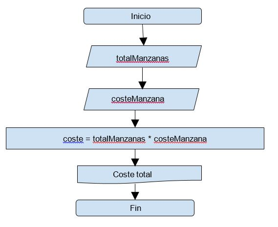

Hola a todos
Inicio del curso

que pasa si despues de cierta cantidad de manzanas nosotros ofrecemos algun tipo de descuento?

muy parecida al SI en excel
if "condicion" "agrupadores logicos" :
(identacion) "sentencias"
== igualdar
< menor que
> mayor que
>= mayor igual que
<= menor igual que
! negacion
if today=='Sunday' or today=='Saturday': operador or
if nombre=='daniel' and edad=='26': operador and

if "condicion" "agrupadores logicos" :
(identacion) "sentencias"
else :
(identacion) "sentencias"

if "condicion" "agrupadores logicos" :
(identacion) "sentencias"
elif "condicion" "agrupadores logicos" :
(identacion) "sentencias"
else :
(identacion) "sentencias"